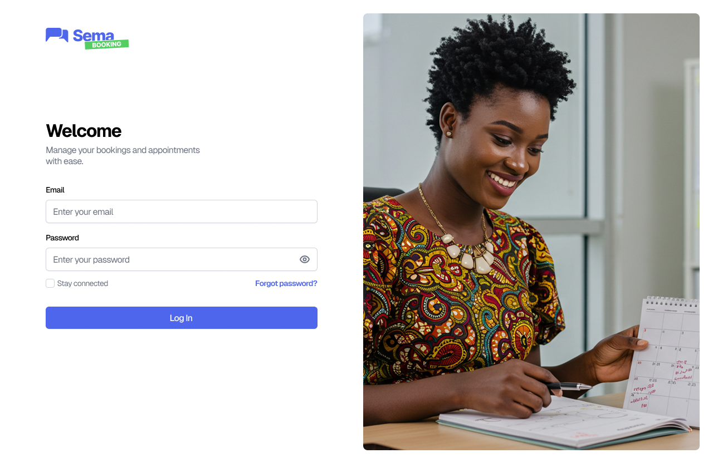

Authentication
User Login
The goal here is to allow any authorized user (receptionist, practitioner, administrator) to access the platform.
If the user forgets their password, a code will be sent to the email address they provide, allowing them to regain access to their account:
Once the code is verified, a new password will be created to complete the reset: